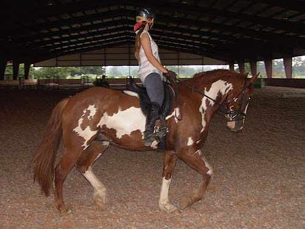

Dressage lesson on
Nero We worked with Neal for a second time,
and
saw that Nero remembered what we'd worked
on.
He started this lesson more focused and
ready to work.
Neal feels Nero could take me further
in dressage than I've
ever gone, so he's probably a little disappointed
that I'm
taking these lessons to get ready for
fox hunting this fall.
He's willing to soften almost immediately
when we start our dressage work.
As he's learning more about responsiveness,
he's also learning more about working laterally, without us specifically
working on it.
He still questions where I want his
head, but every ride is more and more consistent.
For me, used to riding Thuy with a
big neck up in front of me, I'm a little more comfortable when he's in
this frame. But, I have to be sure if he's like this he's tracking up and
not bracing.
We still don't always get bend in
the correct direction, but if I work at asking, I usually do.
His halts are great, but he's not
always steady in the bridle when we execute. Here we wanted to show that
halting in frame can last for more than a second or two and he was ok with
it.
When he uses himself the trot is so
lovely to ride.

My trainer has me hold him in
some, but when I do, he wants me to be sure and push him up into the bridle
to work those tummy muscles (the horse's, not mine).
We've been getting the canter every
time now. Sometimes we still have a question on the leads, but I'm considering
going Training Level with the results we've been getting.
Even when he's a bit hollow,
it's not a bad canter to ride.
I'm opposed to the idea, but my trainer
is recommending draw reins just to get past these awkward moments. I'm
still debating.
Maybe as we have have more and more
moments like this he'll get it without the draw reins.
We had at least 1/2 a circle with
him softening to my requests. With how strong he is, I can only ask...
I should probably work on his canter
some on the lunge with side reins.
Yeah, like that'll happen.
And some trot work to finish up. After
the canter work he was a bit tired, and tended toward curling.
Nero's rarely heavy in front, but
it does happen when he gets tired. Then I have to push through being tired
and add some leg to make him stay balanced.
Just a little more work to prove that
he can keep working even though he's tired and would like to stop.
We both had a workout, but I still
had another horse to ride....